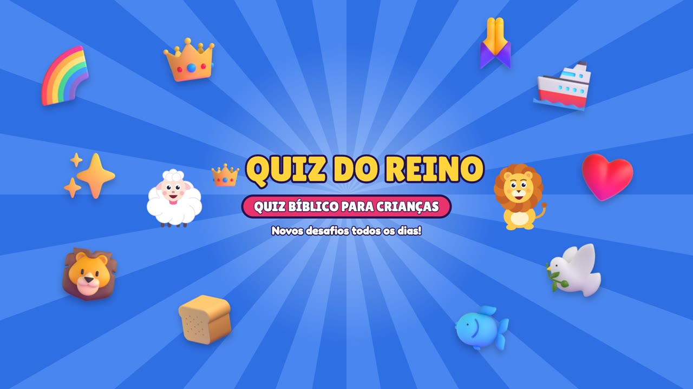

O canal
Quiz do Reino é um canal infantil cristão no YouTube com quizzes bíblicos animados para crianças de 5 a 9 anos. Em cada episódio, a ovelhinha Lulu e o leãozinho Leleco apresentam desafios com emojis, cronômetro e uma explicação bíblica curta de cada resposta.
O conteúdo é marcado como feito para crianças no YouTube e segue as regras de conteúdo infantil da plataforma.
O Publicador Quiz do Reino
O Pequenos Sabios Publicador é uma ferramenta interna, usada apenas pela equipe do canal, que envia os episódios produzidos ao nosso próprio canal no YouTube, define título, descrição, miniatura e horário de publicação, e lê as estatísticas do canal para acompanhar o desempenho. Ela usa os Serviços de API do YouTube e não é oferecida ao público.
About (English)
Quiz do Reino is a Christian kids' YouTube channel (ages 5–9) with animated Bible quizzes. Pequenos Sabios Publicador is an internal tool used only by the channel owner to upload our own videos to our own YouTube channel, set titles, descriptions, thumbnails and publishing times, and read our channel statistics. It uses the YouTube API Services and is not offered to the public.